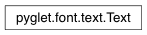

Text Class¶
-
class
Text(font, text=”, x=0, y=0, z=0, color=(1, 1, 1, 1), width=None, halign=’left’, valign=’baseline’)¶ Simple displayable text.
This is a convenience class for rendering strings of text. It takes care of caching the vertices so the text can be rendered every frame with little performance penalty.
Text can be word-wrapped by specifying a width to wrap into. If the width is not specified, it gives the width of the text as laid out.
Variables: Warning
Deprecated. Use pyglet.text.Label.
Attributes:
BASELINEAlign the baseline of the first line of text with the given Y coordinate. BOTTOMAlign the bottom of the descender of the final line of text with the given Y coordinate. CENTERAlign the horizontal center of the text to the given X coordinate. LEFTAlign the left edge of the text to the given X coordinate. RIGHTAlign the right edge of the text to the given X coordinate. TOPAlign the top of the ascender of the first line of text with the given Y coordinate. colorfonthalignHorizontal alignment of the text. heightHeight of the text. leadingVertical space between adjacent lines, in pixels. line_heightVertical distance between adjacent baselines, in pixels. textText to render. valignVertical alignment of the text. widthWidth of the text. xyz
Attributes¶
-
Text.BASELINE= ‘baseline’¶ Align the baseline of the first line of text with the given Y coordinate.
-
Text.BOTTOM= ‘bottom’¶ Align the bottom of the descender of the final line of text with the given Y coordinate.
-
Text.CENTER= ‘center’¶ Align the horizontal center of the text to the given X coordinate.
-
Text.LEFT= ‘left’¶ Align the left edge of the text to the given X coordinate.
-
Text.RIGHT= ‘right’¶ Align the right edge of the text to the given X coordinate.
-
Text.TOP= ‘top’¶ Align the top of the ascender of the first line of text with the given Y coordinate.
-
Text.color¶
-
Text.font¶
-
Text.halign¶ Horizontal alignment of the text.
The text is positioned relative to x and width according to this property, which must be one of the alignment constants LEFT, CENTER or RIGHT.
Type: str
-
Text.height¶ Height of the text.
This property is the ascent minus the descent of the font, unless there is more than one line of word-wrapped text, in which case the height takes into account the line leading. Read-only.
Type: float
-
Text.leading¶ Vertical space between adjacent lines, in pixels.
Type: int
-
Text.line_height¶ Vertical distance between adjacent baselines, in pixels.
Type: int
-
Text.text¶ Text to render.
The glyph vertices are only recalculated as needed, so multiple changes to the text can be performed with no performance penalty.
Type: str
-
Text.valign¶ Vertical alignment of the text.
The text is positioned relative to y according to this property, which must be one of the alignment constants BOTTOM, BASELINE, CENTER or TOP.
Type: str
-
Text.width¶ Width of the text.
When set, this enables word-wrapping to the specified width. Otherwise, the width of the text as it will be rendered can be determined.
Type: float
-
Text.x¶
-
Text.y¶
-
Text.z¶